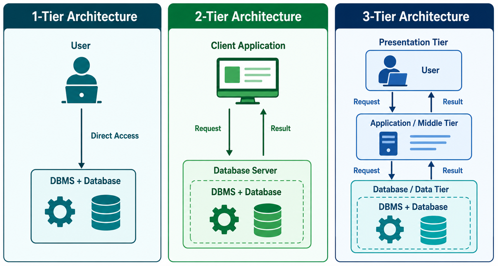

This is another very important IBPS SO IT topic. Questions are frequently asked on 1-tier, 2-tier, 3-tier architecture, especially 3-tier.
I'll explain it in the easiest possible way with real-life examples, diagrams, interview tips, and IBPS tricks.
DBMS Architecture
What is Architecture?
Before understanding DBMS Architecture, understand the word Architecture.
Example
Suppose you want to build a house.
Before building it, an engineer prepares a blueprint showing:
- Where the bedroom will be
- Where the kitchen will be
- Where the bathroom will be
That blueprint is called the architecture of the house.
Similarly,
DBMS Architecture = The structure that shows how different parts of a database system are organized and communicate with each other.
Why do we need DBMS Architecture?
Imagine everyone directly accesses the database.
User 1 ─┐
User 2 ─┼──► Database
User 3 ─┤
User 4 ─┘Problems
❌ Database becomes overloaded
❌ Security issues
❌ Anyone can change data
❌ Difficult to maintain
To solve this, DBMS divides the system into layers (tiers).
Types of DBMS Architecture
The book mentions two ways to classify architecture.
1. Based on Database Location
- Centralized
- Decentralized
- Hierarchical
These are broad classifications and are less important for IBPS.
The important part is the second classification.
2. Based on Number of Layers (Tiers)
There are mainly
- 1-Tier
- 2-Tier
- 3-Tier
The word Tier simply means Layer.
Think of a building.
3rd Floor
2nd Floor
1st FloorEach floor has a different job.
Similarly,
Each tier has a different responsibility.
What is n-Tier Architecture?
Book says
n-tier architecture divides the system into n independent modules.
Simple Meaning
Suppose a system has
User
↓
Application
↓
DatabaseThese are three different parts.
Each works independently.
If one changes,
Others don't need to change.
Example
Suppose
You redesign your banking app.
The database remains exactly the same.
Only the application changes.
That's possible because of n-tier architecture.
Why make separate tiers?
Because it becomes
✔ Easier to modify
✔ Easier to maintain
✔ More secure
✔ Faster to develop

1-Tier Architecture
This is the simplest architecture.
Book says
User directly sits on DBMS.
Diagram
+------------------+
| USER |
| (Developer) |
+------------------+
│
▼
+------------------+
| DBMS |
| DATABASE |
+------------------+User directly talks to the database.
No application.
No middle layer.
Real-Life Example
Suppose you're using MySQL Workbench.
You type
SELECT * FROM Student;The database immediately executes it.
There is no application between you and the database.
Who uses it?
Book says
Database Designers
Programmers
Because they need direct database access.
End users normally don't use this.
Advantages
✔ Very simple
✔ Fast
✔ Easy to develop
Disadvantages
❌ Poor security
❌ Not suitable for many users
❌ End users may accidentally damage data
❌ No abstraction
Easy Trick
1 Tier = Developer directly talks to Database.
2-Tier Architecture
Book says
There is an application between the user and DBMS.
Diagram
+----------------+
| USER |
+----------------+
│
▼
+----------------+
| APPLICATION |
+----------------+
│
▼
+----------------+
| DBMS |
+----------------+Now,
User cannot directly access the database.
Everything goes through the application.
Real-Life Example
Suppose you use
Microsoft Access
or
A desktop Banking Software
Cashier
↓
Bank Application
↓
DatabaseCashier never writes SQL.
The application does everything.
Important Point
Book says
Application is independent of database.
Meaning
You can change
- Application
- Programming language
- Interface
Without changing the database.
Example
Today
Application written in Java.
Tomorrow
Application written in Python.
Database remains MySQL.
No problem.
Advantages
✔ Better security than 1-tier
✔ Easier to use
✔ Better maintenance
Disadvantages
❌ Still not ideal for internet applications
❌ Limited scalability
Easy Trick
2 Tier = User → Application → Database
3-Tier Architecture
This is the MOST IMPORTANT architecture.
⭐ IBPS Favorite
Almost every exam asks this.
Instead of two layers,
We now have three.
Diagram
+----------------------+
| USER / CLIENT |
| (Presentation Layer) |
+----------------------+
│
▼
+----------------------+
| APPLICATION SERVER |
| (Business Logic) |
+----------------------+
│
▼
+----------------------+
| DATABASE SERVER |
| (DBMS) |
+----------------------+Think of Swiggy
When you order food,
Do you directly talk to the restaurant database?
No.
Process
Customer
↓
Swiggy App
↓
Restaurant DatabaseExactly the same architecture.
Layer 1
User (Presentation Tier)
Book says
Users operate here.
They know nothing about the database.
Meaning
Users only see
- Buttons
- Forms
- Screens
Example
ATM
Withdraw
Deposit
BalanceCustomer doesn't know
- SQL
- Tables
- Database
They only press buttons.
More Examples
You click
Like
↓
App sends request.
You never see the database.
Responsibilities
Presentation Layer
- Takes input
- Displays output
- User Interface (UI)
Layer 2
Application (Middle Tier)
This is the brain of the system.
Book says
Application server resides here.
Programs that access the database stay here.
Simple Meaning
This layer decides
Can the user do this?
Should data be saved?
Should data be validated?
Should password be checked?
Example
Suppose
Login Page
You enter
Username
PasswordMiddle layer checks
Is password correct?
↓
Yes
↓
Ask database for user details.If password is wrong
Database isn't even accessed.
This layer contains
- Business Logic
- Validation
- Security
- Authentication
- Processing
Example
Online Shopping
Customer buys
5 TVs.
Application checks
Stock available?
↓
Yes
↓
Proceed
↓
Database updatedImportant Line
Book says
Application acts as a Mediator.
Meaning
It sits between
User
and
Database.
It transfers requests.
Think of Restaurant
Customer
↓
Waiter
↓
ChefCustomer never enters kitchen.
Waiter is mediator.
Similarly
User
↓
Application
↓
DatabaseLayer 3
Database Tier
This is where
Actual data lives.
Book says
Database
Relations
Constraints
SQL
Query processing
Everything stays here.
Responsibilities
Store Data
Execute SQL
Maintain Tables
Maintain Relationships
Maintain Constraints
Return Results
Example
Table
StudentID
Name
MarksStored here.
Query
SELECT * FROM Student;Runs here.
Why Users Don't Know About Database?
Book says
Users don't know database exists.
Meaning
Suppose
You use Amazon.
Do you know
- Table names?
- SQL Queries?
- Primary Keys?
No.
You only see
Search
Cart
Buy NowEverything else is hidden.
Multiple Views
Book says
Application provides multiple views.
Example
College
Student
↓
Can see Marks
Teacher
↓
Can Update Marks
Principal
↓
Can see everything
Same database
Different views.
Why is 3-Tier Better?
Because
Each layer has only one responsibility.
Presentation
↓
Only UI
Application
↓
Only Processing
Database
↓
Only Storage
Advantages of 3-Tier Architecture
✔ High Security
Users cannot directly access database.
✔ Easy Maintenance
Need new UI?
Only Presentation Layer changes.
Database remains same.
✔ Scalability
Can support millions of users.
✔ Better Performance
Application processes requests before reaching database.
✔ Reusable
Same database
Different applications.
Example
Website
↓
Database
↑
Mobile AppBoth use the same database.
✔ Easier Testing
Each layer tested separately.
Why Book Says "Highly Modifiable"
Because every layer is independent.
Example
Old Application
JavaNew Application
PythonDatabase
MySQLNo need to change database.
Only application changes.
Comparison of 1-Tier, 2-Tier, and 3-Tier
| Feature | 1-Tier | 2-Tier | 3-Tier |
|---|---|---|---|
| Layers | 1 | 2 | 3 |
| User directly accesses DB | ✅ Yes | ❌ No | ❌ No |
| Application Layer | ❌ No | ✅ Yes | ✅ Yes |
| Presentation Layer | ❌ No | Limited | ✅ Yes |
| Security | Low | Medium | High |
| Performance | Low for many users | Better | Best |
| Used By | Developers, DBAs | Desktop applications | Web apps, Banking, Amazon, Instagram |
Real-Life Examples
| Architecture | Example |
|---|---|
| 1-Tier | MySQL Workbench, SQL Developer, phpMyAdmin (developer directly works on DB) |
| 2-Tier | Desktop banking software, Microsoft Access applications |
| 3-Tier | Internet Banking, ATM, Amazon, Flipkart, Instagram, Facebook, Swiggy |
⭐ IBPS SO IT Important Questions
Q1. Which architecture is most commonly used in modern DBMS?
✅ 3-Tier Architecture
Q2. Which layer acts as a mediator between the user and the database?
✅ Application (Middle) Tier
Q3. In which architecture does the user directly access the DBMS?
✅ 1-Tier Architecture
Q4. Where does the actual database reside?
✅ Database (Data) Tier
Q5. Which layer is responsible for the User Interface (UI)?
✅ Presentation (User) Tier
Q6. Why is 3-tier architecture preferred?
✅ Because it provides better security, scalability, maintainability, and flexibility by separating the Presentation, Application, and Database layers.
🎯 IBPS Memory Trick
Remember this simple flow:
1-Tier
Developer
↓
Database2-Tier
User
↓
Application
↓
Database3-Tier
User (Presentation)
↓
Application (Business Logic)
↓
Database (Data)One-line shortcut:
- 1-Tier → Direct database access (mostly developers/DBAs).
- 2-Tier → User → Application → Database (desktop/client-server apps).
- 3-Tier → Presentation → Application → Database (modern web, mobile, banking systems). This is the most important architecture for IBPS SO IT.